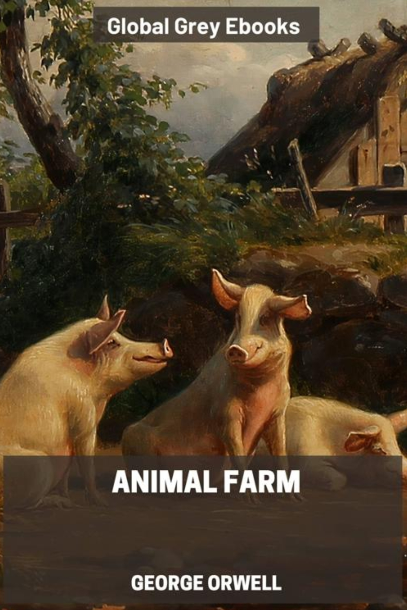
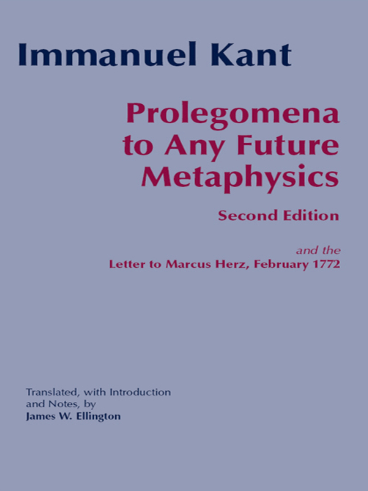

关于我 About Me
教育背景 Education
- 2025.9 – 至今 Present 北京大学 · 元培学院 · 本科 Peking University, Yuanpei College
- 2022.9 – 2025.6 成都市第七中学 Chengdu No.7 High School
研究兴趣 Research Interests
集成电路设计自动化（EDA）：物理设计自动化（布局、布线、逻辑综合）及其与机器学习、组合优化方法的结合。
Electronic Design Automation (EDA): physical design automation (placement, routing, logic synthesis), and its interplay with machine learning and combinatorial optimization.
联系方式 Contact
- 邮箱 Email：2500017829@stu.pku.edu.cn
- GitHub：github.com/mauthings
- 微信 WeChat：Emmanuel_Lau
更新日志 Changelog
- 2026.10.2 加入“摸鱼时间”与读书笔记；优化各学期内容布局；补充课程资料与讲座笔记；加入微信联系方式。Added Leisure and reading notes; improved semester layouts; updated course materials, lecture notes, and WeChat contact.
- 2026.9.17 主页双语化；大二上笔记改为可折叠文件夹；更新四六级成绩。Added bilingual text and collapsible Year 2 course folders; updated CET scores.
- 2026.9.17 整理主页结构，加入学习笔记与成绩单，完善个人信息。Organized the homepage; added study notes, transcripts, and profile details.
- 2026.7.16 个人主页开始施工 🚧 Homepage construction began.
大一上（2025 秋）Year 1 · Fall 2025
高等数学 A1 Advanced Mathematics A1
📄 课堂笔记 Class Notes
（文件较大，下载时间可能较长）Large file; download may take longer.
线性代数 A1 Linear Algebra A1
📄 课堂笔记 Class Notes
（文件较大，下载时间可能较长）Large file; download may take longer.
CET-4：662 Score Report
大一下（2026 春）Year 1 · Spring 2026
程序设计 · 魔兽世界大作业 Programming · Warcraft Project
CET-6：624 Score Report
大一学年成果 Year 1 Achievements
大一学年（2025–2026）成绩单 Academic Year 2025–2026
2026 暑假 Summer 2026
西班牙语学习 Spanish Learning……
大二上（2026 秋）Year 2 · Fall 2026
点击课程文件夹展开并下载笔记。Expand a course folder to download its notes.
📁 Handbook of Algorithms for Physical Design Automation 阅读笔记 · Reading Notes 1
Part 1 笔记 Part 1 Notes
📁 VLSI CAD: Logic to Layout 课程笔记 · Course Notes 4
Lecture 1 & 2 笔记 Lecture 1 & 2 Notes
Lecture 3 笔记 Lecture 3 Notes
Lecture 4 笔记 Lecture 4 Notes
Lecture 5 笔记 Lecture 5 Notes
📁 坛经 The Platform Sutra 3
第 1–2 周笔记 Weeks 1–2 Notes
第 3 周笔记 Week 3 Notes
第 4 周笔记 Week 4 Notes
📁 拉丁美洲政治与外交 Latin American Politics and Diplomacy 1
第 3 周笔记 Week 3 Notes
文献阅读 Literature Reading
此处记录本科期间阅读的学术论文与书籍。Academic papers and books read during undergraduate study.
暂无笔记。No notes yet.
讲座笔记 Lecture Notes
存算一体在AI中的应用以及未来发展 Applications and Future Development of Computing-in-Memory in AI
讲座笔记 · 2026.9.18 Lecture Notes · September 18, 2026
摸鱼时间 Leisure
读书笔记 Reading Notes
读书笔记由移动端 BooxReader 软件直接导出。
Reading notes exported directly from the BooxReader mobile app.

未来形而上学导论 Prolegomena to Any Future Metaphysics
园艺心得 Gardening Notes
以下两篇均为我在高中时期独立设计并完成的研究性学习论文：实验方案、变量控制、观察记录与数据分析均由我一人完成，选题则来自我自己的盆栽种植实践。 The two papers below are independent research-study projects that I designed and carried out entirely on my own during high school — experimental design, variable control, observation records and data analysis were all mine, and the topics came from my own experience growing potted plants.
探究成都平原地区番茄种植的最佳时节 Exploring the Optimal Sowing Time for Tomato Cultivation in the Chengdu Plain
针对成都平原夏季闷热多雨、华西秋雨期间日照不足的气候特点，依次开展秋播、早春播种与夏播三组对照观察，逐一记录播种出苗、花序分化、授粉坐果、虫害与裂果情况，得出当地番茄宜于早春 2 月中上旬育苗并做好保温措施的结论；实验中还意外发现了侧芽扦插可延长产期、替代重新育苗的做法。 Motivated by the Chengdu Plain's hot, rainy summers and the dull winter sunlight brought by the autumn rains, I ran three sets of comparative trials — autumn, early-spring and summer sowing — recording germination, flower differentiation, pollination, pest damage and fruit cracking. The study concluded that early-spring sowing in mid-to-late February, with proper warmth, works best locally; it also turned up an unexpected technique: propagating side shoots by cutting to extend the harvest season.
草莓种植中对缺钙原因与补钙方法的探究 Investigating the Causes of Calcium Deficiency and Effective Remediation in Strawberry Cultivation
以高山草莓为材料设置 A、B、C 三组对照，先追查缺钙诱因，证实大量元素肥料过量引发的元素拮抗是主因；进而检验所购钙肥的有效性，并提出钙磷错期喷施、增施微生物菌肥促根、钙钾间隔一周以上补充等可复现的补钙方案。 Using alpine strawberry plants as the subject, I set up A/B/C control groups to trace the causes of calcium deficiency and confirmed that antagonism triggered by over-application of macronutrient fertilizer is the main culprit. I then tested the effectiveness of the calcium fertilizer purchased, and arrived at a reproducible protocol: applying calcium and phosphorus on staggered schedules, adding microbial inoculant to boost root activity, and keeping calcium and potassium at least a week apart.